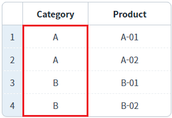
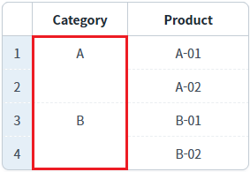
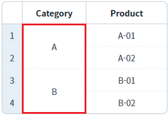
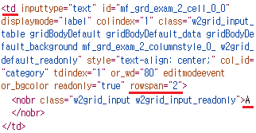
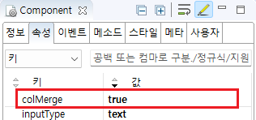
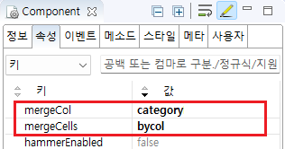

GridView의 'mergeCells' 속성과 바디 컬럼의 'colMerge' 속성을 사용하여 연속으로 반복된 셀 데이터를 병합한 예제입니다.
이 예제를 통해 두 속성이 제공하는 기능을 비교할 수 있습니다.
[바디 컬럼 속성] colMerge : 반복되는 TD의 데이터를 빈 문자열로 할당하고 선을 제거하여 병합 표시. 컬럼 내에서만 동작합니다.
[GridView 속성] mergeCells : HTML TD의 속성 'rowspan' 또는 'colspan'을 사용하여 병합 표시.
병합 기능 미사용
GridView의 바디 컬럼의 'colMerge' 속성를 사용한 컬럼의 셀 병합
GridView의 'mergeCells' 속성를 사용한 컬럼의 셀 병합
예제 영역 '병합 기능 미설정'에 구성된 GridView에서 테스트합니다.병합 기능을 사용하지 않은 GridView의 예시입니다. 병합 기능을 설정했을 때와의 비교를 위해 구성되었습니다.
1
GridView를 확인합니다.
컬럼 'Category'의 행의 데이터가 'A'과 'B'가 연속된 것을 확인할 수 있습니다.
Image 1.브라우저(Chrome) 실행 예시 - GridView의 병합 기능 미설정

예제 영역 'body column 'Category'의 'colMerge' 속성을 'true'로 지정'에 구성된 GridView에서 테스트합니다.1
GridView를 확인합니다.
컬럼 'Category'의 연속으로 반복된 데이터가 병합된 것을 확인할 수 있습니다. 반복되는 데이터를 빈 문자열로 할당하고 선을 제거하여 구현됩니다.
Image 2.브라우저(Chrome) 실행 예시 - GridView의 바디 컬럼 'colMerge' 속성 사용

예제 영역 'GridView의 'mergeCells' 속성을 'bycol'로 지정'에 구성된 GridView에서 테스트합니다.1
GridView를 확인합니다.
컬럼 'Category'의 연속으로 반복된 데이터가 병합된 것을 확인할 수 있습니다. HTML TD의 속성 'rowspan' 또는 'colspan'을 사용하여 구현됩니다.
Image 3.브라우저(Chrome) 실행 예시 - GridView의 'mergeCells' 속성 사용

Image 4.브라우저(Chrome)의 개발자 도구 Elements 탭 예시 - GridView의 셀 구성

1
GridView의 바디 컬럼의 속성을 정의합니다.
[필수] colMerge="true"
Image 5.웹스퀘어 스튜디오의 Component View - 바디 컬럼 속성 설정 예시

Example 1.Source
<!-- gridView 의 소스 본문 예시 --> <w2:gridView id="grd_exam_1" dataList="data:dlt_exam" > <!-- 중략 --> <w2:gBody id="gBody1"> <w2:row id="row2"> <w2:column colMerge="true" id="category" inputType="text"></w2:column> <!-- 중략 --> </w2:row> </w2:gBody> </w2:gridView>
1
GridView의 속성을 정의합니다.
[필수] mergeCells="bycol"
[필수] mergeCol="컬럼 ID"
예시) mergeCol="category"
'mergeCells' 속성의 설정 값에 따른 예시는 다음의 문서에서 확인할 수 있습니다.
Image 6.웹스퀘어 스튜디오의 Component View - 속성 설정 예시

Example 2.Source
<!-- gridView 의 소스 본문 예시 --> <w2:gridView mergeCells="bycol" mergeCol="category" dataList="data:dlt_exam" id="grd_exam_2"> <!-- 중략 --> </w2:gridView>
mergeCells
mergeCol
[body column] colMerge